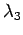

Inhalt Index DeskTop Bronstein

 Lineare Algebra Tensoren Tensoren mit speziellen Eigenschaften Tensoren 2. Stufe
Lineare Algebra Tensoren Tensoren mit speziellen Eigenschaften Tensoren 2. Stufe


Zu einem symmetrischen Tensor T, d.h. für gibt es stets eine orthogonale Transformation  , so daß er nach der Transformation Diagonalform hat:
, so daß er nach der Transformation Diagonalform hat:
| (4.77a) |
Die Elemente und heißen Eigenwerte des Tensors T. Sie sind gleich den Wurzeln und  der Gleichung 3. Grades in
| (4.77b) |
Die Spaltenvektoren und der Transformationsmatrix  heißen die zu den Eigenwerten gehörenden Eigenvektoren und genügen den Gleichungen
heißen die zu den Eigenwerten gehörenden Eigenvektoren und genügen den Gleichungen
| (4.77c) |
Ihre Richtungen bezeichnet man als Hauptachsenrichtungen, die Transformation von T auf die Diagonalform heißt Hauptachsentransformation.